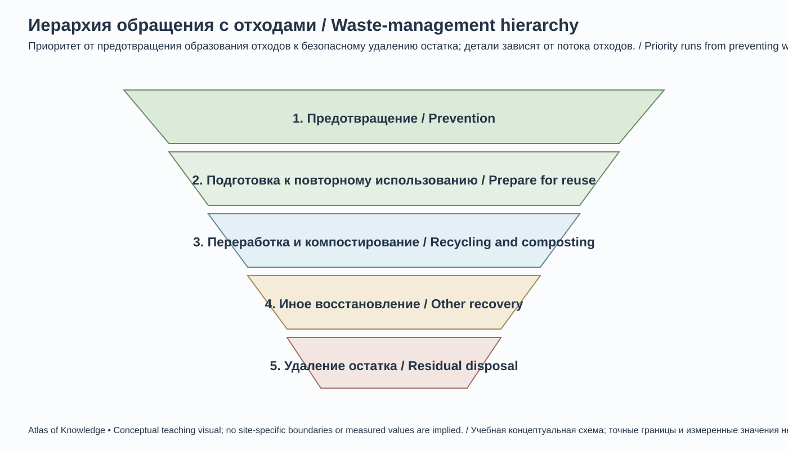
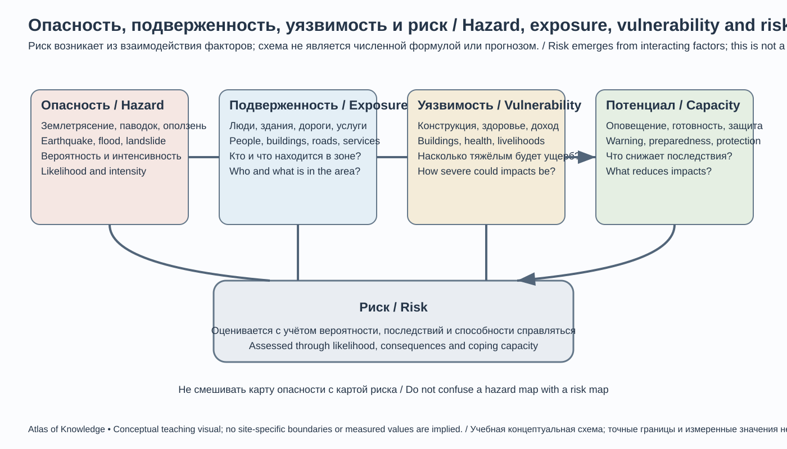
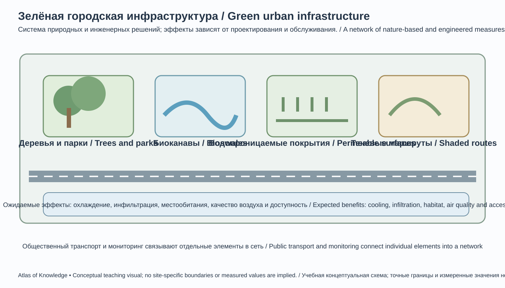

Глава 26. Экологические вызовы и будущее Кыргызстана
Chapter 26. Environmental Challenges and the Future of Kyrgyzstan
Научная оговорка / Scientific note. Экологические показатели в этой главе относятся к разным временным периодам: официальная статистика НСК за 2020–2024 годы, климатические обязательства NDC 3.0 (2025), международные оценки UNEP и Всемирного банка, а также отдельные оперативные наблюдения 2026 года. Эти ряды нельзя объединять без проверки методологии, охвата и даты. Прогнозы обозначены как сценарии, а не как неизбежные результаты.
26.1. Кыргызстан: горная страна в условиях глобальных измененийKyrgyzstan: A Mountain Country in a Changing World
Кыргызстан — высокогорная страна, экологическая безопасность которой тесно связана с состоянием ледников, рек, пастбищ, лесов, почв и горных экосистем. Значительная часть водных ресурсов формируется в горах, а затем используется для питьевого водоснабжения, сельского хозяйства, энергетики и экосистем как внутри страны, так и в соседних государствах. Поэтому изменения в горных природных системах имеют последствия далеко за пределами мест их возникновения.
Экологические вызовы страны взаимосвязаны: - изменение климата усиливает давление на ледники, снежный покров, водный режим и сельское хозяйство; - деградация пастбищ и почв снижает продуктивность земель и устойчивость сельских доходов; - загрязнение воздуха в городах связано с отоплением, транспортом, промышленностью и метеорологическими условиями; - недостаточная очистка сточных вод и неэффективное управление отходами создают риски для рек, озёр и здоровья людей; - добывающая промышленность оставляет долгосрочные экологические обязательства; - природные опасности — землетрясения, сели, оползни, лавины и прорывы ледниковых озёр — воздействуют на население и инфраструктуру.
Природоохранная политика должна рассматривать эти проблемы как единую систему. Например, восстановление лесов и пастбищ помогает снижать эрозию и поддерживать водный режим; эффективное орошение одновременно повышает устойчивость сельского хозяйства и уменьшает давление на водные ресурсы; чистая энергетика может улучшать качество воздуха и снижать выбросы парниковых газов.
Kyrgyzstan is a high-mountain country whose environmental security is closely connected with the condition of glaciers, rivers, pastures, forests, soils and mountain ecosystems. A substantial share of the country's water resources forms in mountain areas and is then used for drinking-water supply, agriculture, energy production and ecosystems, both within Kyrgyzstan and in neighbouring states. Changes in mountain natural systems therefore have consequences far beyond the places where they occur.
The country's environmental challenges are interconnected: - climate change puts additional pressure on glaciers, snow cover, river regimes and agriculture; - pasture and soil degradation reduce land productivity and the resilience of rural livelihoods; - urban air pollution is associated with heating, transport, industry and meteorological conditions; - inadequate wastewater treatment and inefficient waste management create risks for rivers, lakes and public health; - extractive industries leave long-term environmental liabilities; and - natural hazards—including earthquakes, debris flows, landslides, avalanches and glacial lake outburst floods—affect people and infrastructure.
Environmental policy should address these issues as one connected system. Forest and pasture restoration, for example, can reduce erosion and support catchment functions. Efficient irrigation can strengthen agricultural resilience while reducing pressure on water resources. Cleaner energy can improve air quality and reduce greenhouse-gas emissions.
26.2. Климатические изменения: наблюдения и последствияClimate Change: Observations and Impacts
По данным UNEP, средняя годовая температура в Кыргызстане увеличилась примерно на 1,2 °C в период 1960–2023 годов — приблизительно вдвое больше приведённой в той же оценке глобальной величины. Это национальная оценка за конкретный период, а не универсальная характеристика каждого района: локальные тренды различаются по высоте, сезону и географическому положению.
Потепление проявляется в изменениях продолжительности снежного сезона, сроков весеннего таяния, частоты жарких периодов, испаряемости и условий формирования речного стока. Осадки не обязательно изменяются одинаково во всех регионах: важны не только годовые суммы, но и сезонное распределение, интенсивность ливней, доля снега и дождя, а также последовательность засушливых и влажных периодов.
Основные климатические воздействия
- Криосфера. Потепление меняет баланс массы ледников и площадь сезонного снежного покрова. В краткосрочной перспективе усиленное таяние может увеличивать сток отдельных рек, но в долгосрочной перспективе сокращение ледникового запаса уменьшает естественный буфер водоснабжения.
- Водные ресурсы. Меняются сезонность и надёжность стока; возрастает конкуренция между питьевым водоснабжением, орошением, энергетикой и экологическими потребностями.
- Сельское хозяйство. Повышение температуры и испаряемости усиливает потребность в воде, меняет сроки посева и уборки, повышает риск теплового стресса для животных и растений.
- Пастбища. Засухи, изменения снежного режима и чрезмерная нагрузка могут снижать продуктивность угодий и изменять состав растительности.
- Природные опасности. Более интенсивные осадки и нестабильность горных склонов могут повышать опасность отдельных паводков, селей и оползней; причинные связи необходимо устанавливать по каждому типу опасности отдельно.
- Здоровье. Жара, загрязнение воздуха, изменение распространения переносчиков заболеваний и перебои водоснабжения могут влиять на здоровье, особенно детей, пожилых людей и сельских сообществ.
Климатические обязательства
Важное изменение правовой базы произошло в 2026 году: Закон Кыргызской Республики от 7 июля 2026 года № 104 «О климатической деятельности» принят и опубликован, но по состоянию на 1 ноября 2026 года ещё не вступил в силу; дата вступления — 1 января 2027 года. Закон формирует правовые основы климатической политики, включая сокращение выбросов, адаптацию, климатическое финансирование, мониторинг, отчётность и верификацию. В учебном изложении необходимо различать дату принятия и дату вступления в силу.
В 2025 году Кыргызская Республика представила третий определяемый на национальном уровне вклад — NDC 3.0. В документе установлены цели по сокращению чистых выбросов парниковых газов относительно прогнозного базового сценария соответствующего целевого года: к 2030 году — на 18% безусловно и на 30% при международной поддержке; к 2035 году — на 16% безусловно и на 39% при международной поддержке. В NDC также указан 2017 год как базовый (reference) год, однако проценты целевых сокращений рассчитываются не как простое уменьшение выбросов относительно фактического уровня 2017 года: методика сопоставляет чистые выбросы в 2030 и 2035 годах с прогнозными уровнями базового сценария для этих же лет. Безусловный сценарий обозначен в документе как With Measures (WM), условный — With Additional Measures (WAM); дополнительные меры зависят от получения международной поддержки. Поэтому проценты необходимо цитировать вместе с типом сценария и методом расчёта, не трактуя их как абсолютное сокращение относительно произвольно выбранного исторического года.
NDC 3.0 рассматривает адаптацию как стратегический приоритет и выделяет водные ресурсы, энергетику, сельское хозяйство, леса и биоразнообразие, снижение риска бедствий, города и здоровье. Документ предусматривает водосберегающие технологии, климатически устойчивое сельское хозяйство, возобновляемую энергетику, энергоэффективное строительство, укрепление мониторинга и институционального потенциала.
According to UNEP, the average annual temperature in Kyrgyzstan increased by approximately 1.2°C between 1960 and 2023—about twice the global figure cited in the same assessment. This is a national estimate for a defined period, not a universal description of every district: local trends vary by elevation, season and geographic location.
Warming is reflected in changes to the length of the snow season, the timing of spring melt, the frequency of hot periods, evaporation and the conditions under which river runoff forms. Precipitation does not necessarily change in the same way in every region. Annual totals matter, but so do seasonal distribution, rainfall intensity, the share of precipitation falling as snow or rain, and the sequence of dry and wet periods.
Main climate impacts
- Cryosphere. Warming changes glacier mass balance and the area of seasonal snow cover. In the short term, increased melting may raise runoff in some rivers; over the long term, loss of glacier storage reduces the natural buffer that supports water supply.
- Water resources. The seasonality and reliability of river flow change, while competition increases among drinking-water supply, irrigation, energy production and ecological needs.
- Agriculture. Higher temperatures and evaporation increase water demand, alter planting and harvesting dates, and raise the risk of heat stress for crops and livestock.
- Pastures. Drought, changes in snow conditions and excessive grazing pressure can reduce pasture productivity and alter vegetation composition.
- Natural hazards. More intense precipitation and unstable mountain slopes may increase the risk of particular floods, debris flows and landslides. Causal links must be assessed separately for each hazard type.
- Health. Heat, air pollution, changes in the distribution of disease vectors and interruptions to water supply may affect health, particularly among children, older people and rural communities.
Climate commitments
An important change to the legal framework took place in 2026: Law of the Kyrgyz Republic No. 104 of 7 July 2026, “On Climate Activity”, has been adopted and published, but as of 1 November 2026 it has not yet entered into force; its effective date is 1 January 2027. The Law establishes the legal foundations for climate policy, including emissions reduction, adaptation, climate finance, monitoring, reporting and verification. Educational materials must distinguish the date of adoption from the date of entry into force.
In 2025, the Kyrgyz Republic submitted its third Nationally Determined Contribution, NDC 3.0. It sets targets for reducing net greenhouse-gas emissions relative to the projected baseline scenario for each target year: by 2030, 18% unconditionally and 30% with international support; by 2035, 16% unconditionally and 39% with international support. NDC 3.0 also identifies 2017 as the reference year. However, the target percentages are not simple reductions from the observed emissions level in 2017: the accounting method compares net emissions in 2030 and 2035 with the projected baseline levels for those same years. The unconditional scenario is called With Measures (WM), while the conditional scenario is called With Additional Measures (WAM); the additional measures depend on international support. The percentages should therefore always be quoted together with the scenario type and accounting method, and must not be described as absolute reductions from an arbitrarily selected historical year.
NDC 3.0 treats adaptation as a strategic priority and identifies water resources, energy, agriculture, forests and biodiversity, disaster-risk reduction, cities and health as key areas. It provides for water-saving technologies, climate-resilient agriculture, renewable energy, energy-efficient buildings, and stronger monitoring and institutional capacity.
26.3. Ледники, снег и водная безопасностьGlaciers, Snow and Water Security
Для количественной оценки важно указывать дату и метод инвентаризации. По каталогу, подготовленному ЦАИИЗ на основе спутниковых снимков Landsat 8 за 2013–2016 годы, в Кыргызстане было учтено 9 959 ледников общей площадью 6 683,9 км². Сопоставляемый советский каталог, основанный на материалах аэрофотосъёмки 1940–1970-х годов, содержал 8 164 ледника общей площадью 7 944,2 км². Разница площадей составляет около 16% (примерно 1 260 км²), но сравнение не является идеально однородным: старый каталог в отдельных районах не учитывал ледники менее 0,1 км², тогда как новая инвентаризация включала объекты более 0,01 км². Поэтому увеличение числа учтённых ледников не означает роста ледникового покрова: деградация крупных ледников сопровождается их фрагментацией на более мелкие тела. Данные 2013–2016 годов — важная базовая инвентаризация, но не актуальная оценка площади на 2026 год.
Quantifying glacier retreat requires identifying the specific inventory used. The Kyrgyz Republic's First Biennial Transparency Report (BTR1, 2025), citing the CAIAG Catalogue of Glaciers (Edition 01/2024), reports 9,957 glaciers covering 6,804.8 km² and estimates an approximately 14% reduction in glacier area over about 70 years relative to the Soviet-era catalogue. An earlier CAIAG publication based on Landsat-8 imagery from 2013–2016 reported 6,683.9 km² and a 16% reduction. These estimates refer to different inventory editions and methodological snapshots. They must not be interpreted as direct evidence of glacier-area growth between the dates or combined into one continuous time series without checking mapped boundaries, the minimum glacier size included and the mapping methodology.
Для количественной оценки сокращения оледенения важно указывать конкретную инвентаризацию. Первый Двухгодичный доклад о прозрачности Кыргызской Республики (BTR1, 2025), ссылаясь на Каталог ледников CAIAG (издание 01/2024), приводит 9 957 ледников общей площадью 6 804,8 км² и оценивает сокращение площади примерно на 14% за около 70 лет относительно советского каталога. Более ранняя публикация CAIAG на основе снимков Landsat-8 за 2013–2016 годы приводила 6 683,9 км² и сокращение на 16%. Эти оценки относятся к разным версиям инвентаризации и методическим срезам; их нельзя трактовать как прямое свидетельство увеличения ледников между датами или соединять в один непрерывный ряд без проверки границ, минимального размера учитываемых ледников и методики картографирования.
Ледники Кыргызстана — важнейший элемент природного капитала Тянь-Шаня и Памиро-Алая. Они накапливают воду в холодный период и высвобождают её в тёплый сезон. Однако ледниковый сток нельзя считать постоянным и гарантированным источником: его вклад меняется между бассейнами, годами и стадиями дегляциации.
Основные риски
- сокращение площади и объёма ледников;
- изменение времени сезонного максимума стока;
- увеличение нестабильности моренно-ледниковых озёр;
- прорывы ледниковых озёр и связанные с ними паводковые волны;
- изменение водообеспеченности высокогорных и предгорных районов;
- ухудшение качества воды вследствие эрозии, осадконакопления и загрязнения.
Поэтому водная политика должна включать инвентаризацию ледников и озёр, гидрологические станции, дистанционное зондирование, моделирование стока, мониторинг моренных дамб, раннее предупреждение и планы эвакуации.
Эффективность водопользования
По данным открытой статистики НСК за 2025 год, забор воды из природных источников составил 8 938,4 млн м³, водопотребление — 6 224,9 млн м³, в том числе на орошение и сельскохозяйственное водоснабжение — 5 821,1 млн м³. Это статистически учтённые годовые потоки в миллионах кубических метров, а не оценка полного возобновляемого запаса воды страны.
Для управления водным спросом необходимы: - учёт воды на водозаборах и в распределительных сетях; - ремонт каналов и снижение фильтрационных потерь там, где они не обеспечивают полезное пополнение подземных вод; - капельное и дождевальное орошение там, где оно экономически и агрономически оправдано; - выбор культур с учётом водного баланса; - поддержание экологического стока; - защита источников питьевой воды; - трансграничный обмен гидрологическими данными.
Технологии водосбережения должны оцениваться на уровне бассейна: повышение эффективности на одном участке может привести к расширению орошаемых площадей и не уменьшить общий водозабор, если отсутствуют лимиты и учёт.
Quantitative assessments must state the inventory date and method. A glacier inventory prepared by CAIAG from Landsat 8 satellite imagery for 2013–2016 recorded 9,959 glaciers in Kyrgyzstan with a total area of 6,683.9 km². The comparison Soviet catalogue, based on aerial photography from the 1940s–1970s, listed 8,164 glaciers covering 7,944.2 km². The difference in area is about 16% (approximately 1,260 km²), but the comparison is not fully homogeneous: in some areas the older catalogue omitted glaciers smaller than 0.1 km², whereas the newer inventory included features larger than 0.01 km². An increase in the number of mapped glaciers therefore does not mean that glacier cover has expanded: degradation of larger glaciers can fragment them into smaller ice bodies. The 2013–2016 figures are an important baseline inventory, not a current estimate of glacier area in 2026.
Glaciers in Kyrgyzstan are a vital part of the natural capital of the Tien Shan and Pamir–Alay. They store water during cold periods and release it in warmer seasons. However, glacial runoff should not be treated as a constant or guaranteed source: its contribution varies between river basins, years and stages of deglaciation.
Main risks
- reduction in glacier area and volume;
- changes in the timing of seasonal peak runoff;
- increasing instability of moraine-dammed glacial lakes;
- glacial lake outburst floods and the flood waves associated with them;
- changes in water availability in high mountain and foothill areas; and
- deterioration of water quality due to erosion, sedimentation and pollution.
Water policy should therefore include inventories of glaciers and lakes, hydrological stations, remote sensing, runoff modelling, monitoring of moraine dams, early-warning systems and evacuation plans.
Water-use efficiency
According to the National Statistical Committee's open data for 2025, water abstraction from natural sources amounted to 8,938.4 million m³, while water consumption was 6,224.9 million m³. Of the latter, 5,821.1 million m³ was used for irrigation and agricultural water supply. These figures are statistically recorded annual flows in million cubic metres; they are not an estimate of the country's total renewable water resources.
Managing water demand requires: - measuring water at abstraction points and throughout distribution networks; - repairing canals and reducing seepage losses where they do not provide useful groundwater recharge; - using drip and sprinkler irrigation where economically and agronomically appropriate; - selecting crops with the water balance in mind; - maintaining environmental flows; - protecting drinking-water sources; and - exchanging hydrological data across borders.
Water-saving technologies should be assessed at the river-basin scale. Improving efficiency at one location may encourage the expansion of irrigated areas and fail to reduce total abstraction if limits and accounting systems are absent.
26.4. Земли, почвы и пастбищаLand, Soils and Pastures
Почвы и пастбища — основа сельской экономики и важный элемент водосборных экосистем. Деградация земель может проявляться как водная и ветровая эрозия, уплотнение, потеря органического вещества, засоление, опустынивание и снижение растительного покрова.
UNEP в 2025 году сообщал, что около 70% пастбищ страны оцениваются как деградированные. Эту оценку следует приводить именно как международную агрегированную оценку, а не как результат единого полевого обследования каждого пастбищного участка. Для управленческих решений нужны местные данные о продуктивности, составе растительности, нагрузке скота, состоянии почв и сезонном использовании. Отдельное исследование, опубликованное в технической записке ООН/МФСР в 2021 году, оценивало изменения по спутниковым данным между периодами 2000–2004 и 2016–2020 годов и получило оценку, что 94% пастбищ (69 971 км²) испытывали деградацию хотя бы в течение одного сезона. Это не означает, что 94% пастбищ постоянно и одинаково сильно деградированы: показатель включает сезонное ухудшение и зависит от дистанционных индикаторов и принятого определения деградации. Оценки 70% и 94% относятся к разным аналитическим продуктам и не должны усредняться или трактоваться как прямая динамика.
Причины деградации
- концентрация скота вокруг сёл, водопоев и доступных дорог;
- недостаточное чередование пастбищ;
- повреждение растительного покрова и уплотнение почв;
- эрозия склонов и оврагообразование;
- изменение климата и частые засухи;
- слабая инфраструктура удалённых пастбищ;
- неурегулированное использование земель и недостаток мониторинга.
Направления восстановления
- Пастбищные планы на основе реальной ёмкости угодий.
- Сезонная ротация и распределение нагрузки.
- Восстановление водопоев и безопасных маршрутов перемещения скота.
- Защита склонов и прибрежных зон от эрозии.
- Восстановление местной растительности с использованием подходящих видов.
- Мониторинг с помощью полевых площадок, спутниковых снимков и данных землепользования.
- Поддержка пастбищных комитетов и местных сообществ.
Нельзя сводить восстановление пастбищ к массовому посеву одного вида травы. Важны местные экологические условия, биоразнообразие и долгосрочная устойчивость растительного сообщества.
Soils and pastures are the foundation of the rural economy and an important part of catchment ecosystems. Land degradation may take the form of water and wind erosion, soil compaction, loss of organic matter, salinisation, desertification and reduced vegetation cover.
In 2025, UNEP reported that about 70% of the country's pastures were estimated to be degraded. This figure should be presented as an aggregated international estimate, not as the result of a single field survey covering every pasture parcel. Local management decisions require data on productivity, vegetation composition, livestock pressure, soil condition and seasonal use. A separate study published in a 2021 UN/IFAD technical note used satellite data to compare 2000–2004 with 2016–2020 and estimated that 94% of pastures (69,971 km²) had experienced degradation during at least one season. This does not mean that 94% of pastures are permanently and uniformly degraded: the indicator includes seasonal deterioration and depends on remote-sensing measures and the adopted definition of degradation. The 70% and 94% estimates come from different analytical products and must not be averaged or treated as a direct time trend.
Drivers of degradation
- concentration of livestock around villages, watering points and accessible roads;
- insufficient rotation between pastures;
- damage to vegetation cover and soil compaction;
- slope erosion and gully formation;
- climate change and recurrent droughts;
- inadequate infrastructure for remote pastures; and
- poorly regulated land use and insufficient monitoring.
Restoration priorities
- Pasture-management plans based on the actual carrying capacity of grazing land.
- Seasonal rotation and distribution of grazing pressure.
- Restoration of watering points and safe livestock-movement routes.
- Protection of slopes and riparian areas from erosion.
- Restoration of native vegetation using suitable local species.
- Monitoring through field plots, satellite imagery and land-use data.
- Support for pasture committees and local communities.
Pasture restoration should not be reduced to large-scale sowing of a single grass species. Local ecological conditions, biodiversity and the long-term resilience of plant communities are essential.
26.5. Леса и биоразнообразиеForests and Biodiversity
Леса Кыргызстана занимают сравнительно небольшую долю территории, но имеют непропорционально большое экологическое значение. Еловые леса Тянь-Шаня, арчовые редколесья, орехоплодовые леса Западного Тянь-Шаня, пойменные и кустарниковые сообщества обеспечивают местообитания, защиту почв, регулирование стока, накопление углерода и ресурсы для местных сообществ.
По данным UNEP, лесной покров увеличился с 6,2% территории в 2000 году до 6,9% в 2023 году. Международный портал ЦУР ООН приводит иной ряд и иную методику: доля лесной площади выросла с 5,9% в 1990 году до 6,5% в 2025 году. Эти значения нельзя объединять в один временной ряд без сопоставления определений леса, исходных карт и методологии. В сообщении Министерства природных ресурсов от 16 октября 2026 года указана общая площадь лесов 1,273 млн га (6,4% территории); отдельно названа площадь земель Государственного лесного фонда, покрытых лесом, — 787 313,8 га, включая 47 244,2 га искусственных насаждений. Эти категории не тождественны: площадь лесов страны и площадь покрытых лесом земель Государственного лесного фонда имеют разный охват. Показатель министерства за 2026 год также не следует механически соединять с международным рядом ЦУР без проверки определения и методики.
Главные угрозы
- незаконные рубки и чрезмерное использование древесины;
- пожары и засухи;
- выпас скота в лесных экосистемах;
- вредители и болезни;
- фрагментация местообитаний дорогами и застройкой;
- изменение климатических условий;
- браконьерство и сокращение кормовой базы диких животных.
Приоритеты охраны
- сохранение естественных лесных сообществ;
- восстановление деградированных участков местными видами;
- защита орехоплодовых лесов и их генетического разнообразия;
- экологические коридоры между местообитаниями;
- противопожарное планирование и раннее обнаружение пожаров;
- мониторинг редких видов и инвазивных организмов;
- поддержка общинного лесопользования при сохранении экологических функций.
Охрана биоразнообразия не ограничивается границами заповедников. Необходима связность природных территорий, устойчивое землепользование за пределами ООПТ и снижение конфликтов между человеком и дикой природой.
Forests cover a relatively small share of Kyrgyzstan's territory but have ecological importance far beyond their area. Tien Shan spruce forests, open juniper woodlands, walnut-fruit forests of the Western Tien Shan, riparian forests and shrub communities provide habitats, protect soils, regulate runoff, store carbon and support local livelihoods.
According to UNEP, forest cover increased from 6.2% of the country's area in 2000 to 6.9% in 2023. The UN Sustainable Development Goals portal reports a different series using a different methodology: forest area increased from 5.9% in 1990 to 6.5% in 2025. These figures should not be combined into one time series without comparing forest definitions, source maps and methods. A Ministry of Natural Resources release dated 16 October 2026 reports total forest area of 1.273 million hectares (6.4% of the country's territory); it separately gives 787,313.8 hectares of forest-covered State Forest Fund land, including 47,244.2 hectares of artificial plantations. These categories are not identical: total forest area in the country and forest-covered State Forest Fund land have different coverage. The Ministry's 2026 figure should not be mechanically merged with the international SDG series without checking definitions and methods.
Main threats
- illegal logging and excessive fuelwood collection;
- fires and drought;
- livestock grazing within forest ecosystems;
- pests and diseases;
- habitat fragmentation caused by roads and construction;
- changing climatic conditions; and
- poaching and reduced food availability for wild animals.
Conservation priorities
- conserving natural forest communities;
- restoring degraded areas with native species;
- protecting walnut-fruit forests and their genetic diversity;
- maintaining ecological corridors between habitats;
- fire planning and early detection;
- monitoring rare species and invasive organisms; and
- supporting community forestry while maintaining ecological functions.
Biodiversity conservation cannot be limited to the boundaries of nature reserves. It requires connectivity between natural areas, sustainable land use outside protected areas and measures to reduce conflict between people and wildlife.
26.6. Воздух и здоровье населенияAir Quality and Public Health
Загрязнение воздуха — один из наиболее заметных экологических вызовов городов Кыргызстана, особенно в отопительный сезон. В Бишкеке на концентрацию загрязнителей влияют бытовое отопление, транспорт, пыль, промышленные источники, рельеф и зимние температурные инверсии. В других городах источники могут отличаться по структуре и масштабу.
По данным Кыргызгидромета за август 2026 года, на стационарных постах Бишкека среднемесячная концентрация диоксида азота составляла около 2,0 ПДК, оксида азота — 1,3 ПДК; по диоксиду серы — 0,08 ПДК. В публикации отмечено, что данные стационарных постов за август были представлены за первую декаду в связи с модернизацией постов. Поэтому эти показатели нельзя выдавать за годовую среднюю концентрацию или использовать для описания зимнего пика загрязнения.
Отдельный краткосрочный эпизод показывает сезонную изменчивость. По сообщению Kaktus.media со ссылкой на Кыргызгидромет, в период 9–15 октября 2026 года на автоматической станции в юго-западной части Бишкека недельные средние концентрации NO₂, PM2.5 и PM10 составляли соответственно 52,2; 43,4 и 61,4 мкг/м³, что соответствовало 1,31; 1,24 и 1,02 среднесуточной ПДК. Наибольшее недельное среднее PM2.5 в Аламудунском районе достигло 54,7 мкг/м³ (1,56 ПДК). Это ограниченное по времени и пространству наблюдение автоматических датчиков, а не среднегодовая оценка для всего Бишкека или страны.
Основные источники и меры
| Источник | Типичные загрязнители/воздействия | Направления политики |
|---|---|---|
| Бытовое отопление углём и низкокачественным топливом | PM2.5, PM10, CO и другие продукты сгорания | Чистое отопление, утепление домов, контроль топлива |
| Автотранспорт | NOx, PM, CO, летучие органические соединения | Общественный транспорт, техосмотр, качество топлива, управление движением |
| Промышленность и энергетика | Частицы, SO₂, NOx и специфические загрязнители | Фильтры, мониторинг, модернизация и контроль выбросов |
| Строительство и дорожная пыль | Взвешенные частицы | Контроль пыли, уборка улиц, озеленение |
| Сжигание отходов | Токсичные продукты неполного сгорания | Сбор отходов, запрет открытого сжигания, контроль |
Эффективная политика качества воздуха должна сочетать мониторинг PM2.5 и других загрязнителей, инвентаризацию выбросов, проверку эффективности мер, доступные данные для населения и медицинскую оценку воздействия. Нельзя оценивать качество воздуха только по одному индексу или одному датчику: необходимы калиброванные станции, репрезентативное размещение и прозрачная методика.
Особое внимание требуется детям, беременным женщинам, пожилым людям и людям с хроническими заболеваниями. Информирование населения о загрязнении должно быть понятным и сопровождаться рекомендациями по снижению экспозиции.
Air pollution is one of the most visible environmental challenges in Kyrgyzstan's cities, particularly during the heating season. In Bishkek, pollutant concentrations are influenced by household heating, transport, dust, industrial sources, relief and winter temperature inversions. The mix and scale of sources may differ in other cities.
According to Kyrgyzhydromet data for August 2026, the monthly average concentration at Bishkek's stationary monitoring posts was about 2.0 times the maximum permissible concentration (MPC) for nitrogen dioxide, 1.3 times the MPC for nitric oxide and 0.08 times the MPC for sulphur dioxide. The publication notes that the August readings from stationary posts covered only the first ten days because the posts were being modernised. These figures must therefore not be presented as annual average concentrations or used to describe the winter pollution peak.
A separate short-term episode illustrates seasonal variability. Kaktus.media, citing Kyrgyzhydromet, reported that during 9–15 October 2026, weekly average concentrations of NO₂, PM2.5 and PM10 at an automatic station in south-western Bishkek were 52.2, 43.4 and 61.4 μg/m³ respectively, equivalent to 1.31, 1.24 and 1.02 times the daily-average MPC. The highest weekly average PM2.5 reading, in Alamedin District, reached 54.7 μg/m³ (1.56 MPC). This is a geographically and temporally limited automatic-monitoring observation, not an annual average for Bishkek or the country.
Main sources and responses
| Source | Typical pollutants or impacts | Policy directions |
|---|---|---|
| Household heating with coal and low-quality fuels | PM2.5, PM10, CO and other combustion products | Clean heating, home insulation and fuel-quality controls |
| Road transport | NOx, particulate matter, CO and volatile organic compounds | Public transport, vehicle inspection, fuel quality and traffic management |
| Industry and energy production | Particles, SO₂, NOx and sector-specific pollutants | Filters, monitoring, modernisation and emissions control |
| Construction and road dust | Suspended particulate matter | Dust control, street cleaning and urban greening |
| Open waste burning | Toxic products of incomplete combustion | Waste collection, bans on open burning and enforcement |
Effective air-quality policy should combine monitoring of PM2.5 and other pollutants, emissions inventories, evaluation of policy measures, accessible public data and health-impact assessment. Air quality should not be judged using a single index or sensor: calibrated stations, representative siting and transparent methods are essential.
Children, pregnant women, older people and people with chronic illnesses require particular attention. Public information about pollution should be clear and accompanied by practical advice on reducing exposure.
26.7. Вода, сточные воды и санитарная безопасностьWater, Wastewater and Sanitation
Безопасность воды включает доступ к питьевой воде, санитарные услуги, очистку сточных вод, защиту водосборов и управление промышленными сбросами. В горной стране загрязнение в верхней части бассейна может воздействовать на населённые пункты и сельскохозяйственные территории ниже по течению.
По данным ЦУР ООН, доля безопасно очищенных потоков бытовых сточных вод в Кыргызстане составляла около 21,9% в 2024 году. Это международный индикатор 6.3.1 для бытовых стоков. В национальных статистических материалах может публиковаться иной показатель, например доля безопасно очищаемых потоков бытовых и промышленных сточных вод вместе (в национальном ряду за 2024 год — 97,8%). Эти значения имеют разный охват и методологическую основу; их нельзя трактовать как взаимоисключающие оценки одного и того же потока или сравнивать без проверки метаданных и знаменателя.
В более свежей открытой статистике НСК за 2025 год отдельно указаны 188,5 млн м³ сточных вод, 185,6 млн м³ нормативно очищенных вод и 1,4 млн м³ загрязнённых сточных вод, сброшенных без очистки или недостаточно очищенными. Эти объёмные показатели относятся к национальному статистическому учёту и не должны автоматически пересчитываться в долю, сопоставимую с международным индикатором ЦУР 6.3.1: необходимо проверить охват и знаменатель соответствующей таблицы.
Основные проблемы: - изношенные или недостаточные канализационные сети; - недостаточная мощность очистных сооружений; - сброс неочищенных стоков в водные объекты; - недостаточная очистка ливневых вод; - загрязнение от сельского хозяйства и животноводства; - горнодобывающие и промышленные загрязнители; - недостаточная защита санитарных зон источников питьевой воды.
Приоритетные меры — строительство и модернизация очистных сооружений, энергоэффективные технологии, контроль качества сбросов, лабораторный мониторинг, управление осадком сточных вод, защита водозаборов и устойчивое финансирование эксплуатации систем. Строительство объекта без бюджета на обслуживание не гарантирует долгосрочного результата.
Water security includes access to drinking water, sanitation services, wastewater treatment, catchment protection and the management of industrial discharges. In a mountainous country, pollution in the upper part of a basin can affect settlements and agricultural areas downstream.
According to the UN Sustainable Development Goals data, the share of domestic wastewater flows safely treated in Kyrgyzstan was about 21.9% in 2024. This is international SDG indicator 6.3.1 for domestic wastewater. National statistical publications may report a different measure, such as the share of domestic and industrial wastewater flows safely treated together (the national series reports 97.8% for 2024). These figures have different coverage and methodological bases; they should not be treated as contradictory estimates of the same wastewater flow or compared without checking the metadata and denominator.
More recent NSC open data for 2025 separately report 188.5 million m³ of wastewater, 185.6 million m³ of wastewater discharged after treatment to the applicable standard, and 1.4 million m³ of polluted wastewater discharged untreated or insufficiently treated. These volume indicators belong to the national statistical reporting system and should not automatically be converted into a percentage comparable with the international SDG 6.3.1 indicator; the coverage and denominator of the relevant table must first be checked.
Main challenges include: - worn-out or insufficient sewerage networks; - inadequate capacity of wastewater treatment plants; - discharge of untreated wastewater into water bodies; - insufficient treatment of stormwater; - pollution from agriculture and livestock; - pollutants from mining and industry; and - inadequate protection of sanitary zones around drinking-water sources.
Priority measures include building and modernising treatment facilities, adopting energy-efficient technologies, controlling discharge quality, laboratory monitoring, managing sewage sludge, protecting water intakes and ensuring sustainable financing for system operation. Constructing a facility without an operating and maintenance budget does not guarantee a lasting result.
26.8. Отходы и циркулярная экономикаWaste and Circular Economy
Рост городов, потребления и строительства увеличивает объём бытовых, промышленных, строительных и сельскохозяйственных отходов. Система обращения с отходами должна охватывать весь цикл: предотвращение образования, раздельный сбор, повторное использование, переработку, безопасное обезвреживание и размещение остатка.
По данным НСК, в 2024 году в стране было вывезено 1 646,5 тыс. тонн твёрдых бытовых отходов; на отходы домашних хозяйств приходилось 46,9%, на отходы предприятий и организаций — 17,0%. На города Бишкек и Ош вместе пришлось около 56% вывезенного объёма. Это показатель вывоза/сбора, а не полного образования всех отходов: он не охватывает автоматически неучтённые, самостоятельно сжигаемые, захороненные или невывезенные отходы. В отдельной таблице НСК за 2023 год указано, что 48,5% способов избавления от бытового мусора приходилось на сбор грузовиком или контейнером, 23,2% — на сброс в мусорные кучи, 19,3% — на сжигание и 9,1% — на закапывание. Показатели 2023 года описывают практики избавления от мусора, а не структуру вывезенного объёма 2024 года; их нельзя складывать или напрямую сопоставлять.
Иерархия обращения с отходами
- Предотвращение образования отходов.
- Сокращение использования материалов и упаковки.
- Повторное использование и ремонт.
- Раздельный сбор и переработка.
- Компостирование органических отходов при соблюдении санитарных требований.
- Энергетическое использование только при строгом контроле выбросов и доказанной экологической целесообразности.
- Безопасное размещение остаточных отходов на инженерно оборудованных полигонах.
Приоритетные направления: - закрытие или модернизация несанкционированных свалок; - предотвращение попадания отходов в реки и озёра; - создание региональных систем сортировки; - раздельный сбор бумаги, стекла, металла, пластика и органики; - ответственность производителей и импортёров за отдельные категории продукции; - безопасное управление медицинскими, электронными и опасными отходами; - развитие рынка вторичного сырья.
Сжигание отходов не является универсальным решением: без очистки газов и контроля состава сырья оно может переносить загрязнение из твёрдой фазы в атмосферу.
Growth in cities, consumption and construction increases the volume of household, industrial, construction and agricultural waste. A waste-management system should cover the entire cycle: prevention, separate collection, reuse, recycling, safe treatment and disposal of residual waste.
According to the National Statistical Committee, 1,646.5 thousand tonnes of municipal solid waste were removed in 2024. Household waste accounted for 46.9%, while waste from enterprises and organisations accounted for 17.0%. Bishkek and Osh together accounted for about 56% of the reported volume. This is a collection/removal indicator, not a complete measure of all waste generated: it does not automatically include unrecorded, self-burned, buried or uncollected waste. A separate NSC table for 2023 reports that 48.5% of household-waste disposal methods involved collection by truck or container, 23.2% involved dumping in waste heaps, 19.3% burning and 9.1% burial. The 2023 figures describe disposal practices, not the composition of the 2024 collected volume; they must not be added together or directly compared.
Waste-management hierarchy
- Prevent waste generation.
- Reduce the use of materials and packaging.
- Reuse and repair products.
- Collect materials separately and recycle them.
- Compost organic waste where sanitary requirements can be met.
- Recover energy only under strict emissions control and where environmental benefits have been demonstrated.
- Dispose of residual waste safely at engineered landfills.
Priority actions include: - closing or upgrading unauthorised dumpsites; - preventing waste from entering rivers and lakes; - establishing regional sorting systems; - separately collecting paper, glass, metals, plastics and organic waste; - applying producer and importer responsibility to selected product categories; - safely managing medical, electronic and hazardous waste; and - developing markets for secondary raw materials.
Waste incineration is not a universal solution. Without flue-gas cleaning and control of the waste composition, it can transfer pollution from the solid phase into the atmosphere.

26-H. Приоритеты соответствуют общей иерархии предотвращения, повторного использования, переработки, восстановления и удаления; конкретные решения зависят от потока отходов и жизненного цикла.Priorities follow the general hierarchy of prevention, reuse, recycling, recovery and disposal; specific choices depend on the waste stream and life-cycle impacts.
EN: Waste-management diagram showing prevention, separate collection, sorting, recycling, composting and safe residual disposal.
26.9. Горнодобывающая промышленность и экологическое наследиеMining and Environmental Legacy
Горнодобывающая отрасль создаёт рабочие места, экспортные доходы и налоговую базу, но может формировать экологические риски на десятилетия. Особое значение имеют хвостохранилища, отвалы, шахтные воды, кислотный дренаж, пыление, нарушение земель и безопасность старых промышленных площадок.
Принципы ответственного управления
- полная оценка воздействия до выдачи разрешений;
- открытая информация о лицензиях и обязательствах;
- независимый мониторинг воды, почв и воздуха;
- финансовые гарантии рекультивации;
- безопасное проектирование и эксплуатация хвостохранилищ;
- планы закрытия рудников и постэксплуатационного мониторинга;
- участие местных сообществ;
- доступ к данным о чрезвычайных ситуациях и загрязнении.
Для старых промышленных объектов необходимы инвентаризация загрязнённых площадок, оценка путей миграции загрязнителей, приоритизация объектов по риску, безопасная изоляция или очистка и долгосрочный мониторинг. Нельзя предполагать, что прекращение добычи автоматически устраняет риск.
The mining sector creates jobs, export earnings and tax revenue, but it can also leave environmental risks that persist for decades. Tailings storage facilities, waste dumps, mine water, acid drainage, dust, land disturbance and the safety of old industrial sites require particular attention.
Principles of responsible management
- comprehensive impact assessment before permits are issued;
- public information about licences and obligations;
- independent monitoring of water, soil and air;
- financial guarantees for land rehabilitation;
- safe design and operation of tailings storage facilities;
- mine-closure plans and post-closure monitoring;
- participation by local communities; and
- public access to information about emergencies and pollution.
For legacy industrial sites, priorities include inventories of contaminated locations, assessment of contaminant pathways, risk-based ranking of sites, safe containment or remediation, and long-term monitoring. The end of mining does not automatically eliminate environmental risk.
26.10. Природные опасности и снижение риска бедствийNatural Hazards and Disaster Risk Reduction

26-I. Риск возникает из взаимодействия факторов; схема не является численной формулой, картой опасностей или прогнозом конкретного события.Risk emerges from interacting factors; this is not a numerical formula, hazard map or forecast of a specific event.
EN: Hazard–exposure–vulnerability–risk infographic and map examples of debris-flow, landslide, flood and seismic hazards; do not present a schematic map as a forecast.
Горная география Кыргызстана формирует широкий спектр природных опасностей: - землетрясения; - сели и паводки; - оползни и обвалы; - снежные лавины; - прорывы ледниковых озёр; - засухи и волны жары; - лесные и степные пожары; - экстремальные холода и сильные снегопады.
UNEP сообщал о регистрации в среднем около 200 чрезвычайных ситуаций в год, примерно 90% которых имели природное происхождение. Это агрегированная оценка конкретного периода и методики учёта; её нельзя автоматически сопоставлять с оперативными числами других ведомств без проверки определения чрезвычайной ситуации.
От опасности к риску
Риск бедствия определяется сочетанием трёх компонентов:
[ R = f(H, E, V) ]
где (H) — опасность (hazard), (E) — экспозиция (exposure), (V) — уязвимость (vulnerability). В практическом анализе также учитывается способность к реагированию и восстановлению.
Например, сильный ливень в необитаемом горном ущелье не обязательно создаёт крупное бедствие. Тот же ливень в застроенной пойме, где отсутствует система оповещения и безопасная эвакуация, может привести к человеческим жертвам и большим потерям.
Система снижения риска
- Карты опасностей и уязвимости на уровне населённых пунктов.
- Гидрометеорологический и геологический мониторинг.
- Системы раннего предупреждения и понятные протоколы оповещения.
- Устойчивые строительные нормы и контроль их соблюдения.
- Зонирование территорий и ограничение застройки в опасных местах.
- Безопасные маршруты эвакуации и подготовка населения.
- Резервные фонды и механизмы быстрого финансирования восстановления.
- Учёт потребностей детей, пожилых людей и людей с инвалидностью.
Kyrgyzstan's mountain geography creates a wide range of natural hazards: - earthquakes; - debris flows and floods; - landslides and rockfalls; - snow avalanches; - glacial lake outburst floods; - droughts and heatwaves; - forest and steppe fires; and - extreme cold and heavy snowfall.
UNEP reported an average of about 200 emergency events per year, approximately 90% of which were of natural origin. This is an aggregated estimate for a particular period and reporting method; it should not be compared automatically with operational counts from other agencies without checking how an emergency event is defined.
From hazard to risk
Disaster risk results from the interaction of three components:
[ R = f(H, E, V) ]
where (H) is the hazard, (E) is exposure and (V) is vulnerability. Practical assessments also consider the capacity to respond and recover.
For example, an intense rainstorm in an uninhabited mountain gorge does not necessarily cause a major disaster. The same storm in a built-up floodplain without a warning system or safe evacuation routes may cause casualties and substantial losses.
A disaster-risk reduction system
- Hazard and vulnerability maps at settlement level.
- Hydrometeorological and geological monitoring.
- Early-warning systems and clear alert protocols.
- Resilient building standards and enforcement.
- Land-use zoning and restrictions on construction in hazardous locations.
- Safe evacuation routes and public preparedness.
- Reserve funds and mechanisms for rapid recovery financing.
- Consideration of the needs of children, older people and persons with disabilities.
26.10.1. Как расставлять приоритеты при снижении риска бедствийPrioritising Disaster Risk Reduction Measures
Органы местного управления и специалисты часто сталкиваются с несколькими опасностями одновременно, но ресурсы на защиту ограничены. Поэтому важно не просто составить перечень опасностей, а прозрачно объяснить, какие меры следует реализовать в первую очередь.
Первичный анализ риска может включать следующие вопросы:
- Какое опасное явление возможно и какова его вероятная интенсивность?
- Какие люди, здания, дороги, мосты, школы, больницы и инженерные сети могут оказаться в зоне воздействия?
- Насколько уязвимы эти объекты и люди: учитываются качество строительства, возраст зданий, доступ к информации, мобильность и социальные условия?
- Какие возможности предупреждения, эвакуации, реагирования и восстановления уже существуют?
- Какова неопределённость данных и какие сведения необходимо собрать дополнительно?
Матрица приоритетов. Для предварительного сравнения можно использовать качественную матрицу с категориями низкого, среднего и высокого уровня опасности, экспозиции и уязвимости. Она помогает организовать обсуждение, но не заменяет инженерную оценку, вероятностный анализ или официальную карту опасности. Нельзя механически перемножать порядковые категории и выдавать результат за точную вероятность или денежный ущерб.
Пример. В условном горном районе рассматриваются два объекта. Первый — мост, единственный круглогодичный путь к нескольким сёлам; второй — сезонная дорога, используемая ограниченным числом хозяйств. Даже если вероятность повреждения обоих объектов оценивается одинаково, последствия потери моста могут быть существенно выше из-за изоляции населения и нарушения доступа к медицине и снабжению. Приоритет определяется не только вероятностью события, но и последствиями, уязвимостью и наличием альтернативных маршрутов.
Портфель мер. Эффективная стратегия обычно сочетает: 1. предотвращение нового риска — запрет или ограничение строительства в опасных зонах; 2. снижение существующего риска — укрепление зданий, мостов, склонов и защитных сооружений; 3. готовность — мониторинг, оповещение, планы эвакуации и обучение; 4. финансовую защиту — резервы, страховые механизмы и планы восстановления; 5. восстановление с учётом риска — не воспроизводить прежнюю уязвимость при ремонте и строительстве.
Приоритеты необходимо пересматривать после новых обследований, изменения землепользования, строительства инфраструктуры и крупных событий. Важно консультироваться с населением, включая группы, которым сложнее получить предупреждение или самостоятельно эвакуироваться.
Учебное задание. Выберите два условных объекта в горной долине и сравните последствия их повреждения при паводке или оползне. Составьте качественную матрицу опасности, экспозиции и уязвимости, укажите неопределённость и предложите по две меры предотвращения, готовности и восстановления. Не присваивайте объектам точные вероятности без исходных данных.
Local authorities and specialists often face several hazards at once, while resources for protection are limited. It is therefore important not merely to list hazards, but to explain transparently which measures should be implemented first.
A preliminary risk assessment may address the following questions:
- What hazardous event is possible, and how intense could it be?
- Which people, buildings, roads, bridges, schools, hospitals and utility networks may be exposed?
- How vulnerable are these people and assets? Consider construction quality, building age, access to information, mobility and social conditions.
- What warning, evacuation, response and recovery capacities already exist?
- How uncertain are the data, and what additional information is needed?
A prioritisation matrix. A qualitative matrix using low, medium and high categories for hazard, exposure and vulnerability can support preliminary comparison. It helps structure discussion but does not replace engineering assessment, probabilistic analysis or an official hazard map. Ordinal categories must not be multiplied mechanically and presented as an exact probability or monetary loss.
Example. Consider two assets in a hypothetical mountain district. The first is a bridge serving as the only year-round route to several villages. The second is a seasonal road used by a limited number of households. Even if the likelihood of damage is assessed as similar, losing the bridge may have much greater consequences because it could isolate residents and interrupt access to healthcare and supplies. Priority depends not only on event likelihood but also on consequences, vulnerability and alternative routes.
A portfolio of measures. An effective strategy usually combines: 1. preventing new risk by prohibiting or limiting construction in hazardous areas; 2. reducing existing risk by strengthening buildings, bridges, slopes and protective infrastructure; 3. preparedness through monitoring, warnings, evacuation plans and training; 4. financial protection through reserves, insurance mechanisms and recovery plans; 5. risk-informed recovery that avoids reproducing previous vulnerabilities during repair and reconstruction.
Priorities should be reviewed after new surveys, land-use changes, infrastructure development and major events. Consultation with residents is essential, including groups who may have difficulty receiving warnings or evacuating independently.
Learning activity. Select two hypothetical assets in a mountain valley and compare the consequences of their damage during a flood or landslide. Prepare a qualitative hazard, exposure and vulnerability matrix, state uncertainties and propose two measures each for prevention, preparedness and recovery. Do not assign precise probabilities without supporting data.
26.11. Города, зелёная инфраструктура и качество жизниCities, Green Infrastructure and Quality of Life

26-K. Концептуальная сеть решений; эффекты охлаждения, инфильтрации, качества воздуха и биоразнообразия зависят от местного проектирования и обслуживания.Conceptual network of interventions; cooling, infiltration, air-quality and biodiversity benefits depend on local design and maintenance.
EN: Green urban infrastructure diagram showing trees, parks, drainage, cool routes and public transport, linked to heat and air quality. EN: Green urban infrastructure diagram showing trees, parks, drainage, cool routes and public transport, linked to heat and air quality.
Устойчивые города должны снижать воздействие на природу и одновременно повышать качество жизни. В Кыргызстане это особенно важно для Бишкека, Оша и быстро растущих районных центров.
Городская экологическая политика включает: - компактное и смешанное землепользование; - доступный общественный транспорт и безопасные пешеходные маршруты; - энергоэффективное отопление и здания; - сохранение парков, деревьев, рек и естественных водоотводов; - канализацию и очистку стоков; - управление строительными и бытовыми отходами; - контроль пыли и выбросов; - сейсмостойкое строительство и адаптацию к жаре.
Зелёная инфраструктура — не только декоративное озеленение. Это связанная сеть парков, водных коридоров, городских лесов, зелёных улиц, почвопроницаемых поверхностей и природных участков, которые поддерживают охлаждение, удержание ливневой воды, биоразнообразие и общественное здоровье.
Посадка деревьев должна учитывать местный климат, доступность воды, устойчивость видов, аллергенность, безопасность инфраструктуры и уход. Количество посаженных саженцев не равно площади восстановленного устойчивого зелёного покрова.
Sustainable cities should reduce pressure on the natural environment while improving quality of life. In Kyrgyzstan, this is particularly important for Bishkek, Osh and rapidly growing district centres.
Urban environmental policy includes: - compact and mixed-use land development; - accessible public transport and safe walking routes; - energy-efficient heating and buildings; - protection of parks, trees, rivers and natural drainage routes; - sewerage and wastewater treatment; - management of construction and household waste; - control of dust and emissions; and - earthquake-resistant construction and adaptation to heat.
Green infrastructure is more than decorative landscaping. It is a connected network of parks, waterways, urban forests, green streets, permeable surfaces and natural areas that support cooling, stormwater retention, biodiversity and public health.
Tree planting should account for local climate, water availability, species resilience, allergenicity, infrastructure safety and long-term maintenance. The number of seedlings planted is not the same as the area of resilient green cover restored.
26.12. Биоразнообразие, охраняемые территории и экологические коридорыBiodiversity, Protected Areas and Ecological Corridors
Кыргызстан расположен в пределах глобально значимых горных экосистем Тянь-Шаня и Памиро-Алая. Здесь встречаются эндемичные и редкие растения, горные копытные, хищные птицы, снежный барс и другие виды, зависящие от связности местообитаний.
По данным UNEP, площадь охраняемых территорий выросла примерно с 0,5 млн га в 2000 году до 1,5 млн га в 2023 году. Это показатель площади по методике использованного источника, а не доказательство одинаковой эффективности управления всеми территориями.
Эффективная охрана природы требует: - достаточного финансирования и кадрового обеспечения ООПТ; - научного мониторинга видов и местообитаний; - экологических коридоров между охраняемыми территориями; - борьбы с браконьерством и незаконной торговлей; - управления конфликтами между хищниками и животноводством; - контроля туристической нагрузки; - восстановления деградированных экосистем; - участия местных сообществ в распределении выгод от охраны природы.
Следует различать национальные заповедники и природные парки, биосферные резерваты ЮНЕСКО, Рамсарские угодья и объекты Всемирного наследия. Международное признание не заменяет национальный правовой режим охраны.
Kyrgyzstan lies within the globally significant mountain ecosystems of the Tien Shan and Pamir–Alay. The region supports endemic and rare plants, mountain ungulates, birds of prey, the snow leopard and other species that depend on connected habitats.
According to UNEP, the area of protected territories increased from approximately 0.5 million hectares in 2000 to 1.5 million hectares in 2023. This is an area indicator based on the source's methodology; it does not demonstrate that all protected areas are managed with equal effectiveness.
Effective nature conservation requires: - adequate funding and staffing for protected areas; - scientific monitoring of species and habitats; - ecological corridors between protected areas; - action against poaching and illegal wildlife trade; - management of conflict between predators and livestock husbandry; - control of tourism pressure; - restoration of degraded ecosystems; and - participation by local communities in sharing the benefits of conservation.
National nature reserves and parks, UNESCO biosphere reserves, Ramsar sites and World Heritage properties are different categories. International recognition does not replace the national legal protection regime.
26.13. Зелёная экономика, энергетический переход и климатическое финансированиеGreen Economy, Energy Transition and Climate Finance
Переход к низкоуглеродной экономике должен учитывать энергетическую безопасность, доступность энергии, качество воздуха, занятость и конкурентоспособность предприятий. Для Кыргызстана важны модернизация гидроэнергетики и сетей, солнечная и ветровая генерация, энергоэффективность зданий, чистое отопление, общественный транспорт и сокращение потерь в системах.
Принципы справедливого перехода
- доступная энергия для домохозяйств;
- поддержка работников и регионов, зависящих от угольной и старой промышленности;
- профессиональная переподготовка;
- прозрачные тарифные решения;
- адресная поддержка уязвимых групп;
- участие местных сообществ;
- оценка жизненного цикла технологий и материалов.
Климатическое финансирование может включать гранты, льготные кредиты, гарантии, страховые инструменты, смешанное финансирование и частные инвестиции. Для привлечения средств необходимы качественные проекты, измеримые результаты, прозрачная отчётность, оценка рисков и способность обслуживать инвестиции.
Приоритет следует отдавать проектам, которые одновременно уменьшают выбросы и повышают устойчивость: утепление зданий, модернизация ирригации, раннее предупреждение, восстановление пастбищ, очистка стоков и климатически устойчивые дороги.
The transition to a low-carbon economy must take account of energy security, affordability, air quality, employment and business competitiveness. For Kyrgyzstan, priorities include modernising hydropower and electricity grids, developing solar and wind generation, improving building energy efficiency, providing clean heating, strengthening public transport and reducing system losses.
Principles of a just transition
- affordable energy for households;
- support for workers and regions dependent on coal and older industrial sectors;
- vocational retraining;
- transparent decisions on tariffs;
- targeted support for vulnerable groups;
- participation by local communities; and
- life-cycle assessment of technologies and materials.
Climate finance may include grants, concessional loans, guarantees, insurance instruments, blended finance and private investment. Accessing funding requires high-quality projects, measurable results, transparent reporting, risk assessment and the capacity to operate and maintain investments.
Priority should be given to projects that both reduce emissions and strengthen resilience: building insulation, irrigation modernisation, early warning, pasture restoration, wastewater treatment and climate-resilient roads.
26.14. Сценарии будущего Кыргызстана до 2050 годаFuture Scenarios to 2050
Сценарии — это инструменты планирования, а не предсказания. Их задача — показать, как разные решения могут изменить экологическую безопасность и качество жизни.
Сценарий A. Инерционное развитие
Экономический рост продолжается, но инфраструктура модернизируется медленно. Потери воды, деградация земель, загрязнение воздуха и отходы сокращаются недостаточно быстро. Природные опасности всё сильнее воздействуют на дороги, сельское хозяйство и населённые пункты. Расходы на ликвидацию ущерба могут вытеснять инвестиции в образование, здравоохранение и развитие.
Сценарий B. Адаптация и восстановление природного капитала
Страна системно модернизирует водное хозяйство, пастбищное управление, раннее предупреждение, очистку стоков и охрану лесов. Города инвестируют в чистое отопление и общественный транспорт. Риск ущерба от климатических и геологических опасностей снижается, а сельские сообщества получают более устойчивые источники дохода.
Сценарий C. Зелёная и инновационная модернизация
Адаптация сочетается с низкоуглеродной энергетикой, энергоэффективностью, цифровым мониторингом, циркулярной экономикой и устойчивой транспортной системой. Экологические данные становятся открытыми и сопоставимыми, а инвестиции оцениваются по полному жизненному циклу и социальным последствиям.
Критерии оценки сценариев
| Направление | Индикаторы |
|---|---|
| Климат | Выбросы парниковых газов, адаптационные потери, охват системами предупреждения |
| Вода | Водозабор на единицу продукции, потери в сетях, качество воды, экологический сток |
| Земли | Состояние пастбищ, эрозия, органическое вещество почв, восстановленные земли |
| Леса и биоразнообразие | Площадь и состояние лесов, связность местообитаний, состояние ключевых видов |
| Воздух | PM2.5, NO₂, число дней превышения нормативов, охват чистым отоплением |
| Отходы | Образование отходов на душу населения, доля переработки, безопасное размещение |
| Города | Доступность транспорта, зелёных зон, канализации и питьевой воды |
| Устойчивость | Ущерб от бедствий, время восстановления услуг, защищённость инфраструктуры |
Scenarios are planning tools, not predictions. Their purpose is to show how different decisions may change environmental security and quality of life.
Scenario A. Business as usual
Economic growth continues, but infrastructure is modernised slowly. Water losses, land degradation, air pollution and waste are not reduced quickly enough. Natural hazards increasingly affect roads, agriculture and settlements. Spending on disaster recovery may crowd out investment in education, healthcare and development.
Scenario B. Adaptation and restoration of natural capital
The country systematically modernises water management, pasture governance, early-warning systems, wastewater treatment and forest conservation. Cities invest in clean heating and public transport. The risk of damage from climatic and geological hazards decreases, while rural communities gain more resilient sources of income.
Scenario C. Green and innovative modernisation
Adaptation is combined with low-carbon energy, energy efficiency, digital monitoring, a circular economy and sustainable transport. Environmental data become open and comparable, while investments are assessed across their full life cycle and social impacts.
Scenario assessment criteria
| Area | Indicators |
|---|---|
| Climate | Greenhouse-gas emissions, adaptation losses, population covered by warning systems |
| Water | Water abstraction per unit of output, network losses, water quality and environmental flows |
| Land | Pasture condition, erosion, soil organic matter and rehabilitated land |
| Forests and biodiversity | Forest area and condition, habitat connectivity and status of key species |
| Air | PM2.5, NO₂, days above standards and access to clean heating |
| Waste | Waste generated per capita, recycling rate and safe disposal |
| Cities | Access to transport, green spaces, sewerage and drinking water |
| Resilience | Disaster losses, time needed to restore services and infrastructure protection |
26.14.1. Разобранный пример: оценка потерь воды в системе водоснабженияWorked Example: Estimating Water Losses in a Supply System
Предположим, что условный населённый пункт с населением 10 000 человек получает в систему водоснабжения 1 250 м³ воды в сутки. По расчётам потребителей и учёту отпуска полезно используется 1 000 м³ в сутки. Разница — вода, которая не была учтена как полезное потребление:
[ L=1\,250-1\,000=250\text{ м}^3/\text{сутки} ]
Доля этой разницы от объёма, поданного в систему:
[ L_\%=\frac{250}{1\,250}\times100\%=20\% ]
Таким образом, расчётная доля потерь и неучтённой воды составляет 20%. В пересчёте на год при неизменных суточных значениях:
[ 250\times365=91\,250\text{ м}^3/\text{год} ]
Это значительный объём, но его нельзя автоматически целиком считать утечками из труб. В баланс могут входить ошибки приборов учёта, незаконные подключения, технологические расходы на промывку и пожаротушение, а также реальные утечки.
Почему это важно для устойчивости: сокращение реальных утечек может уменьшить нагрузку на источники воды, насосы и энергоснабжение. Но сначала необходимо провести водный аудит, разделить реальные потери и коммерческие/учётные расхождения и проверить надёжность измерений.
Проверьте себя: если в систему поступает 800 м³ в сутки, а учтённое полезное потребление составляет 680 м³, какова доля разницы в процентах от поданного объёма? Какие данные нужны, чтобы определить, какая часть этой разницы является физической утечкой?
Assume a hypothetical settlement of 10,000 people receives 1,250 m³ of water per day into its supply system. Metered and accounted-for useful consumption is 1,000 m³ per day. The difference is water not recorded as useful consumption:
[ L=1,250-1,000=250\text{ m}^3/\text{day} ]
The difference as a share of the volume supplied is:
[ L_\%=\frac{250}{1,250}\times100\%=20\% ]
The estimated share of water losses and unaccounted-for water is therefore 20%. If daily values remain unchanged, the annual volume is:
[ 250\times365=91,250\text{ m}^3/\text{year} ]
This is a substantial volume, but it should not automatically be described entirely as leakage from pipes. The water balance may include meter errors, illegal connections, operational uses such as flushing and firefighting, as well as physical leaks.
Why this matters for sustainability: reducing real leakage can lower pressure on water sources, pumps and energy supply. However, a water audit is needed first to distinguish physical losses from commercial or accounting discrepancies and to check measurement reliability.
Check your understanding: if 800 m³ enters a system each day and recorded useful consumption is 680 m³, what percentage of the supplied volume is the difference? What information is needed to determine how much of it is physical leakage?
26.15. Практические работыPractical Exercises
Работа 1. Климатический тренд
Выберите метеостанцию и получите ряд температуры и осадков за максимально длинный доступный период. Рассчитайте линейный тренд, сравните сезонные изменения и объясните ограничения короткого ряда.
Работа 2. Водный баланс бассейна
Составьте упрощённый баланс выбранного речного бассейна: осадки, испарение, поверхностный и подземный сток, водозабор и возвратные воды. Отделите запасы воды от потоков за период.
Работа 3. Мониторинг пастбищ
Используйте спутниковые снимки разных лет и полевые наблюдения для оценки изменения растительного покрова. Не интерпретируйте NDVI как прямое измерение деградации без проверки осадков, сезонности и типа растительности.
Работа 4. Карта загрязнения воздуха
Соберите данные официальных постов наблюдений. Сопоставьте их с дорожной сетью, отоплением, плотностью застройки и рельефом. Укажите пространственные и временные ограничения измерений.
Работа 5. Оценка риска селя
Определите опасный бассейн, населённые пункты, дороги и социальные объекты в зоне воздействия. Составьте карту опасности, экспозиции и уязвимости; предложите меры предупреждения.
Работа 6. Аудит отходов населённого пункта
Оцените источники, состав, сбор, транспортировку, переработку и размещение отходов. Предложите систему сокращения образования отходов и раздельного сбора.
Работа 7. Экологическая оценка промышленного объекта
Определите потенциальные загрязнители, пути миграции, чувствительные рецепторы, меры контроля и обязательства по закрытию и рекультивации.
Работа 8. Сценарий климатически устойчивого села
Разработайте план адаптации для сельского населённого пункта с учётом воды, пастбищ, дорог, жилья, здоровья, раннего предупреждения и доходов домохозяйств.
Practical work 1. Climate trend
Select a weather station and obtain the longest available time series of temperature and precipitation. Calculate a linear trend, compare seasonal changes and explain the limitations of a short record.
Practical work 2. Basin water balance
Prepare a simplified water balance for a selected river basin: precipitation, evaporation, surface and groundwater runoff, abstraction and return flows. Distinguish water stocks from flows measured over a period.
Practical work 3. Pasture monitoring
Use satellite images from different years and field observations to assess changes in vegetation cover. Do not interpret NDVI as a direct measurement of degradation without checking precipitation, seasonality and vegetation type.
Practical work 4. Air-pollution map
Collect data from official monitoring stations. Compare them with roads, heating sources, building density and relief. State the spatial and temporal limitations of the measurements.
Practical work 5. Debris-flow risk assessment
Identify a hazardous catchment, settlements, roads and social facilities within the area of potential impact. Prepare a hazard, exposure and vulnerability map and propose warning and prevention measures.
Practical work 6. Settlement waste audit
Assess the sources, composition, collection, transport, recycling and disposal of waste. Propose a system for waste prevention and separate collection.
Practical work 7. Environmental assessment of an industrial site
Identify potential pollutants, migration pathways, sensitive receptors, control measures and obligations for closure and land rehabilitation.
Practical work 8. Climate-resilient village scenario
Develop an adaptation plan for a rural settlement that addresses water, pastures, roads, housing, health, early warning and household incomes.
26.17. Основные понятияKey Terms
| Русский термин | English term | Определение / Definition |
|---|---|---|
| Адаптация к изменению климата | Climate change adaptation | Снижение уязвимости и использование возможностей, связанных с климатическими изменениями / Reducing vulnerability to climate impacts and making use of potential opportunities |
| Смягчение изменения климата | Climate change mitigation | Сокращение источников или увеличение поглотителей парниковых газов / Reducing sources or increasing sinks of greenhouse gases |
| Определяемый на национальном уровне вклад | Nationally Determined Contribution (NDC) | Национальные цели и меры в рамках Парижского соглашения / A country's targets and measures under the Paris Agreement |
| Криосфера | Cryosphere | Совокупность замёрзших компонентов Земли / The frozen-water components of the Earth system |
| Деградация земель | Land degradation | Долгосрочное снижение экологической и хозяйственной продуктивности земель / A long-term decline in the ecological and economic productivity of land |
| Экологический сток | Environmental flow | Количество, качество и сезонный режим воды, необходимые экосистемам / The quantity, quality and timing of water flows needed to sustain ecosystems |
| Природная опасность | Natural hazard | Потенциально разрушительное природное явление / A natural process or event with the potential to cause harm |
| Экспозиция | Exposure | Наличие людей, инфраструктуры и активов в зоне опасности / The presence of people, infrastructure and assets in areas that may be affected by a hazard |
| Уязвимость | Vulnerability | Склонность системы к ущербу при воздействии опасности / The tendency of a system or exposed element to suffer harm when affected by a hazard |
| Раннее предупреждение | Early warning | Система обнаружения опасности, оценки риска и своевременного оповещения / A system for detecting hazards, assessing risk and issuing timely warnings |
| Циркулярная экономика | Circular economy | Экономическая модель сокращения отходов и повторного использования ресурсов / An economic model that reduces waste and keeps materials and resources in use |
| Природный капитал | Natural capital | Природные активы и экосистемные функции, обеспечивающие общественные блага / Natural assets and ecosystem functions that provide benefits to society |
26.18. Контрольные вопросыReview Questions
- Почему горная география усиливает климатическую уязвимость Кыргызстана?
- Чем адаптация отличается от смягчения изменения климата?
- Почему увеличение ледникового стока в отдельный период не обязательно означает долгосрочное улучшение водной обеспеченности?
- Какие меры способны уменьшить деградацию пастбищ?
- Почему показатели лесного покрова разных организаций могут отличаться?
- Какие источники загрязнения воздуха наиболее важны для городов и почему их вклад сезонен?
- Чем национальный показатель очистки сточных вод отличается от индикатора ЦУР ООН?
- Почему строительство очистных сооружений должно сопровождаться финансированием эксплуатации?
- Какие экологические обязательства необходимы для горнодобывающего проекта?
- Как различаются опасность, экспозиция и уязвимость при оценке риска бедствий?
- Почему зелёная инфраструктура — это не только посадка деревьев?
- Какие показатели позволяют оценить справедливость и результативность зелёного перехода?
Review Questions
- Why does Kyrgyzstan's mountain geography increase its vulnerability to climate change?
- How does climate-change adaptation differ from mitigation?
- Why does an increase in glacier runoff during a particular period not necessarily mean that long-term water security is improving?
- Which measures can reduce pasture degradation?
- Why may forest-cover indicators published by different organisations differ?
- Which sources of air pollution are most important in cities, and why does their contribution vary by season?
- How does the national wastewater indicator differ from the UN SDG wastewater-treatment indicator?
- Why must the construction of wastewater treatment plants be accompanied by funding for their operation and maintenance?
- What environmental obligations are necessary for a mining project?
- How do hazard, exposure and vulnerability differ in disaster-risk assessment?
- Why is green infrastructure more than tree planting?
- Which indicators can be used to assess the fairness and effectiveness of the green transition?
26.20. Источники и литератураReferences
- UNEP. Climate change is reshaping the Kyrgyz Republic, finds new UNEP Atlas. 26 March 2025. https://www.unep.org/news-and-stories/press-release/climate-change-reshaping-kyrgyz-republic-finds-new-unep-atlas
- Ministry of Natural Resources, Ecology and Technical Supervision of the Kyrgyz Republic. Climate action and NDC 3.0. https://climate.mnr.gov.kg/en/klimattyk-araketter
- Kyrgyz Republic. Third Nationally Determined Contribution (NDC 3.0), submitted 2025. UNFCCC. https://www.unfccc.int/sites/default/files/2025-10/NDC3.0_Kyrgyzstan_English_30-09-2025%20%282%29.pdf
- World Bank. Kyrgyz Republic Country Climate and Development Report. https://www.worldbank.org/en/country/kyrgyzrepublic/publication/ccdr
- National Statistical Committee of the Kyrgyz Republic. Environment in the Kyrgyz Republic 2020–2024: Statistical Collection, 2026. https://stat.gov.kg/
- National Statistical Committee of the Kyrgyz Republic. Protection and rational use of water resources: open data. https://stat.gov.kg/en/opendata/category/3216/
- UN Statistics Division. Kyrgyz Republic SDG Country Profile. https://unstats.un.org/sdgs/dataportal/countryprofiles/KGZ
- Kyrgyzhydromet. Information on air pollution in cities of the Kyrgyz Republic, August 2026. https://www.meteo.kg/ru/pages/INFORMATION%20ON%20AIR%20QUALITY
- UN Sustainable Development Group. Breathing Easier: UN Leads Clean Air Action in Kyrgyzstan. 16 June 2025. https://unsdg.un.org/latest/stories/breathing-easier-un-leads-clean-air-action-kyrgyzstan
- UNICEF Kyrgyzstan. Climate change and child-sensitive climate resilience. https://www.unicef.org/kyrgyzstan/climate-change
- Ministry of Natural Resources, Ecology and Technical Supervision of the Kyrgyz Republic. Results of environmental and technical compliance control for 2025. https://mnr.gov.kg/ru/posts/news/ob-itogax-kontrolno-nadzornoi-deyatelnosti-v-sfere-ekologiceskoi-i-texniceskoi-bezopasnosti-za-2025-god
- UNFCCC. Paris Agreement and national climate reporting resources. https://unfccc.int/
- Convention on Biological Diversity. Kunming-Montreal Global Biodiversity Framework. https://www.cbd.int/gbf
- Ramsar Convention on Wetlands. Country profile and wetland conservation resources. https://www.ramsar.org/
- UNESCO. Man and the Biosphere Programme and World Heritage resources. https://www.unesco.org/
- UNFCCC. Kyrgyzstan NDC 3.0 — official submission record and attachments. https://unfccc.int/node/650219
- National Statistical Committee of the Kyrgyz Republic. Protection and rational use of water resources: open data, 2021–2025 series. https://stat.gov.kg/en/opendata/category/3216/
- National Statistical Committee of the Kyrgyz Republic. Figures and Facts of the Kyrgyz Republic for 2024, Goal 6: 97.8% of household and industrial wastewater undergoes safe treatment. https://stat.gov.kg/media/publicationarchive/12bf2931-b740-497d-9ea0-0e017281accd.pdf
- National Statistical Committee of the Kyrgyz Republic. Kyrgyzstan in Figures 2025, Table on municipal solid waste removal by waste type and territory (2024 data). https://stat.gov.kg/media/publicationarchive/a2d756a0-9549-4b37-8884-4e777b8c90a8.pdf
- National Statistical Committee of the Kyrgyz Republic. Sustainable Development Goals in the Kyrgyz Republic, indicator 11.6.1.2: municipal solid waste removal by territory and disposal method (2024 and 2023 tables). https://stat.gov.kg/media/publicationarchive/6de87cb2-b960-4797-b036-ad26e6eaa6cb.pdf
- United Nations / International Fund for Agricultural Development. Technical Note: Pasture Condition Maps in Kyrgyzstan, 1 July 2021 (remote-sensing comparison of 2000–2004 and 2016–2020; seasonal degradation indicator). https://kyrgyzstan.un.org/en/176443-technical-note-pasture-condition-maps-kyrgyzstan
- Ministry of Natural Resources, Ecology and Technical Supervision of the Kyrgyz Republic. “Total forest area in the country amounts to 1 million 273 thousand hectares”, 16 October 2026. https://www.mnr.gov.kg/ru/posts/news/obshhaya-ploshhad-lesov-v-strane-sostavlyaet-1-mln-273-tys-gektarov
- United Nations Statistics Division. SDG Country Profile: Kyrgyzstan, Goal 15 (forest-area series and protected-area coverage). https://unstats.un.org/sdgs/dataportal/countryprofiles/kgz?goal=15
- Central Asian Institute for Applied Geosciences (CAIAG). Catalogue of Glaciers of Kyrgyzstan: Landsat 8 inventory for 2013–2016 and comparison with the Soviet glacier catalogue. https://www.caiag.kg/en/departments/department-2-climate-water-and-natural-resources/current-activities
- United Nations Development Programme. “Glaciers of Kyrgyzstan: How they are disappearing” (glacier inventory, thresholds and comparison caveats). https://www.undp.org/kyrgyzstan/blog/glaciers-kyrgyzstan-how-they-are-disappearing
- Kaktus.media, citing Kyrgyzhydromet. Bishkek and surrounding districts recorded air-pollution exceedances, 17 October 2026 (monitoring period 9–15 October 2026). https://kaktus.media/555234
- Ministry of Natural Resources, Ecology and Technical Supervision of the Kyrgyz Republic; UNEP; UNDP. First Biennial Transparency Report of the Kyrgyz Republic under the UNFCCC Paris Agreement. Bishkek, 2025 (including glacier inventory figures and climate-risk assessment). https://unfccc.int/sites/default/files/resource/%28%D0%94%D0%94%D0%A2%29%20Eng_BTR1_Final.pdf https://unfccc.int/sites/default/files/resource/%2528%25D0%2594%25D0%2594%25D0%25A2%2529%2520Eng_BTR%25201_Final.pdf
- Ministry of Justice of the Kyrgyz Republic. Law of 7 July 2026 No. 104 “On Climate Activity” (effective 1 January 2027). https://cbd.minjust.gov.kg/230050082/edition/57539/ru
Конец главы 26End of Chapter 26
Основная часть атласа завершена.The main atlas chapters are complete.
Следующий этап: завершение сквозного аудита глав 1–26, закрытие выявленных содержательных пробелов, приложения, единая научная редактура, библиография и подготовка к визуальной вёрстке.